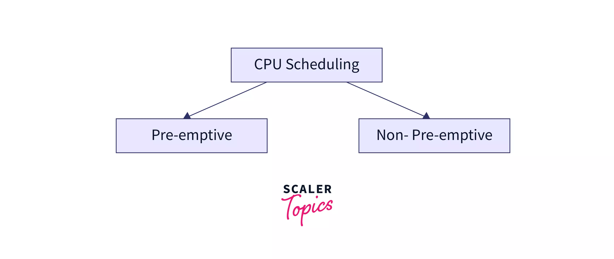
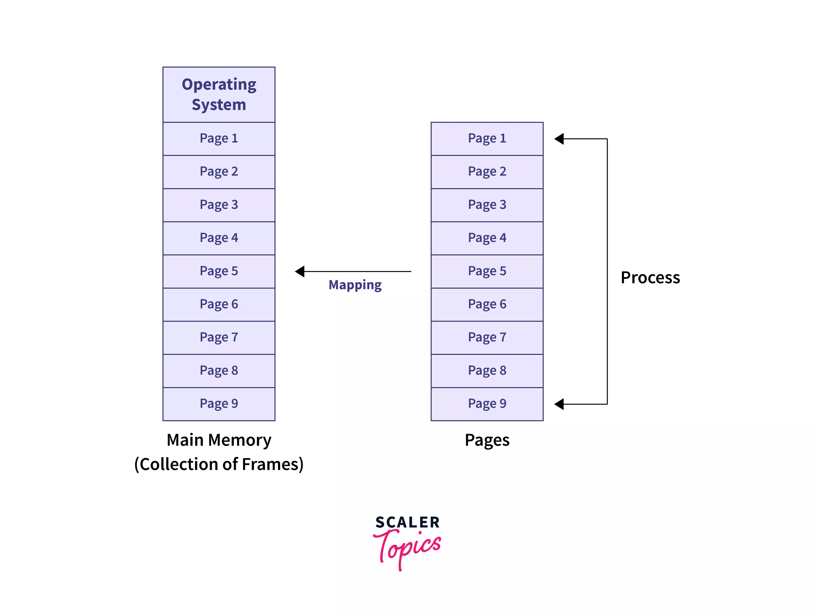

Welcome to Operating Systems Guide
This is a simple guide for understanding Operating Systems. Use the navigation tabs above to explore different topics.

CPU Scheduling
Learn about different CPU scheduling algorithms and how they manage process execution.

Paging & Page Replacement
Visualize paging and understand how different page replacement algorithms work.